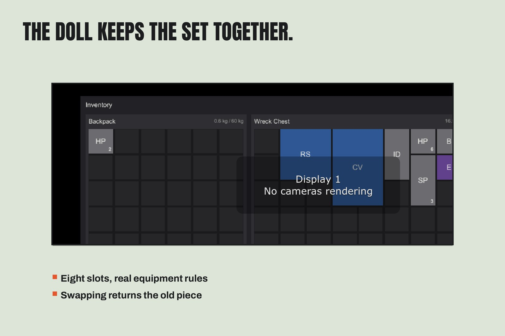
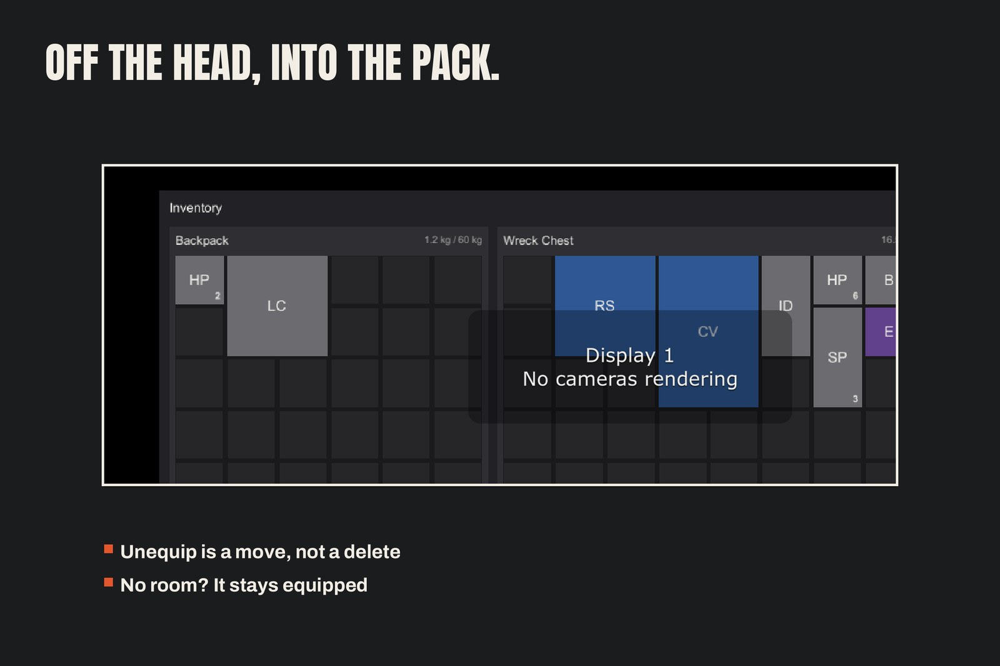

The Equipment Doll (Separate Module)
The paper-doll ships as its own module — EquipmentSet (the model),
EquipmentLoadout (its scene face), EquipmentDollView (the panel)
and the equipment block of the serializer. The grid, container,
transfer and serializer-core files contain no references to it:
delete the module's files and the inventory core compiles and runs
untouched.
Slots
Eight: Back, Head, MainHand, Chest, OffHand, Legs, Accessory, Feet.
A definition's EquipmentSlot says where it goes; None means it can
never be equipped, and the equip path refuses it plainly.
Equip, swap, unequip
- Equip — click an item to select it, then click its slot. One unit is consumed from the stack.
- Swap — with a slot already filled, equipping is all-or-nothing: the old item is returned to the source grid first; if the grid cannot take it back, the swap is refused and nothing has moved.
- Unequip — click a filled slot with nothing selected: the item moves into the bound container (the backpack on the standard screen). If there is no room, it stays equipped and the status line says why.


In code
loadout.Equipment.TryEquip(new ItemStack(def, 1), out var refused);
var worn = loadout.Equipment.GetEquipped(EquipmentSlotType.MainHand);
var back = loadout.Equipment.Unequip(EquipmentSlotType.MainHand);EquipmentLoadout.StartingEquipped equips one item at initialize —
the demo's Leather Cap. Equipment state saves in the same DTO tree as
the containers (see Saving and JSON), restored with the same
named-warning behaviour.